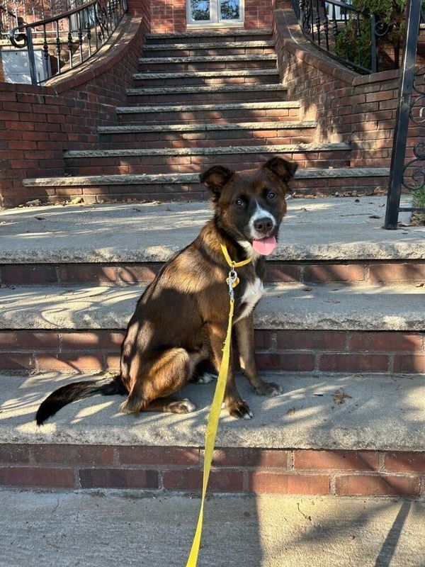

New foster neededFargo
Fargo is an energetic, smart, affectionate girl who loves people, dog friends, toys and learning tricks for treats. She's crate trained, still working on housebreaking and settling, and would do best with structure in a home without cats, children, or anxious or older dogs.
Apply to Foster Fargo